Egtved
Grobkörniger, grauer Granit mit rotem Korn
Höhe: 80 cm
Größte Breite: 55 cm
Dicke ca. : 43 cm
Runenhöhe: 9,5 - 20 cm
Runeninschrift :
N.N. machte diese Kumbl zum Andenken an) ..., den Gemalten (?); er starb in Svia. Es ritzte (Runen ein Bruder) zum Andenken an den Bruder. Dieser Stein ...

81 - Egtved - Letztes Update 05.10.2025
Listennummer : DR 37 / DK SJy 6
Navidaten: 55.61992 9.30075 oder: Fyrre Alle 6, 6040 Egtved
Transliteration: ...at : fai(n) [:] (t)u : i suiu : raist | ...uþiR : aft : bruþur | stain : sasi : skarni :
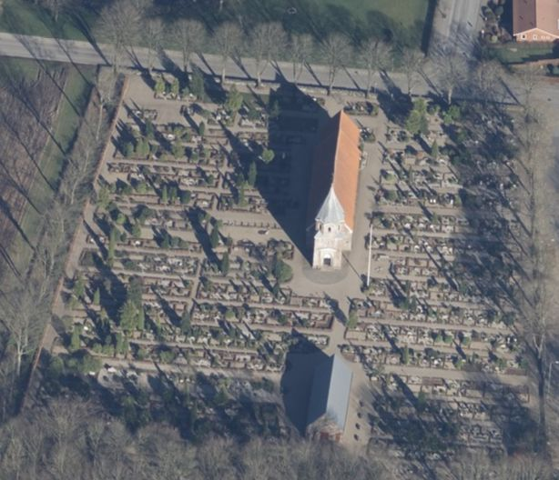
Dies ist ein Luftfoto vom 02.04.2023 von Skråfoto, das die Kirche von Egtved zeigt (Bild zugeschnitten). Skråfoto ist eine Webanwendung, die von Klimadatastyrelsen weltweit kostenlos bereitgestellt wird - Freie Nutzung unter Beachtung der Lizenz: CC BY 4.0 Die Aufnahmen werden seit 2017 alle zwei Jahre erneuert und neben einer Senkrechtaufnahme wird ein Schrägbild aus jeder Himmelsrichtung angeboten, das man über eine Adresssuche aufrufen kann.
Dieser Runenstein wurde im Januar 1863 durch den Maurermeister Anders Nielsen aus Starup bei der Restaurierung der Kirche in Egtved entdeckt. Der Stein saß inwendig in der südlichen Kirchhofeinfriedung von Egtved, etwa 10 Fuß (ca.3,15 m) vom Eingangstor entfernt. Daraufhin wurde er herausgenommen und im Waffenhaus aufgestellt, wo er sich noch heute befindet.
Nach Auffassung von Lis Jacobsen (*29.01.1882 - 18.06.1961, dänische Runologin und Archäologin -link-LIVES - Taufe - Melderegister - Hochzeit)
 Bildquelle:
Wikipedia - Lizenz:
Public Domain
Bildquelle:
Wikipedia - Lizenz:
Public Domain
könnte "suiu" den Siedlungsnamen Svia in der Gemeinde Vaksala, Uppland, Schweden, abdecken (Aufsatz "Syv runestenstolkninger" in "Aarbøger for Nordisk Oldkyndighed og Historie - 1935" auf S. 191-92); eine Interpretation, die laut Eintrag in der Dänische Runendatenbank jedoch objektiv weniger wahrscheinlich erscheint (Peterson 2007: 321). Falls doch, wäre derjenige, zu dessen Andenken der Runenstein errichtet wurde, dort vermutlich auf Handelsfahrt ums Leben gekommen.
Der Inschriftpassus den Gemalten bedeutet vielleicht, dass er tätowiert war.
Die Inschrift wird von den Runologen in die Zeit von 900-1020 datiert. Sie verläuft wie hier dargestellt in der sogenannten Parallelanordnung und bustrophed (Wechselnde Schreibrichtung - "hin und her wie ein Ochse beim Pflügen"). Allerdings ist die Deutung nicht einwandfrei, da wohl größere Teile des Steins / der Inschrift fehlen.
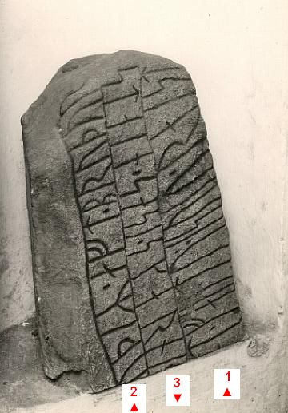
Bildquelle: Dänische Runendatenbank - Foto von Erik Moltke (siehe auch unten)
Diese Aufnahmen wurden von mir bei meinem Besuch in Egtved am Dienstag, 23.08.2016, aufgenommen (vergößerte Darstellung bei Mausklick aufs Bild):
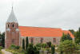 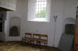 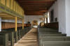 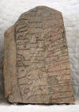 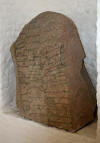


Zuvor war ich am Mittwoch, 15.08. 1990 und am Freitag, 26.09.2003, schon an der Örtlichkeit gewesen.
Im Rahmen meiner 2022er Jütland Wikingertour war ich am Samstag, 18.06.2022, vor Ort. Die Kirche ist ausweislich einer Info in der Kirche wirklich täglich von 08.00 bis 16.30 Uhr geöffnet. Auf deren Homepage findet sich dieser Hinweis auch.
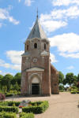 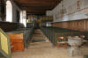 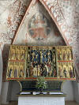 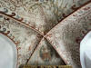 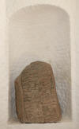 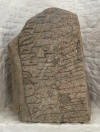 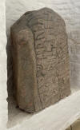 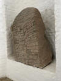 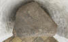


In den beiden großen dänischen Runenwerken wurden jeweils Zeichnungen von Prof. Julius Magnus Petersen (*04.09.1827 - 31.01.1917, Archäologischer Zeichner und Restaurator - link-LIVES - Bestattungsprotokoll)


Bildquelle: Fotografie von 1903 von Fotograf Marius Christensen (*24.06.1874 - 25.06.1907) - Det Kgl. Biblioteks billedsamling - Lizenz: Public Domain / Kgl. Bibliothek - Visitenkarte Pappschachtel Thorsen 5 - eigenes Foto
aufgenommen.
Zunächst bei Prof. P. G. Thorsen (*07.08.1811 - 06.05.1883, Bibliothekar, Runenforscher und Historiker - link-LIVES - Artikel: Levnedsbeskrivelser af de ved Københavns Universitets Firehundredaarsfest promoverede Doktorer, Illustreret Tidende 1882, Nr. 1235 - vom 27.05.1833 / Grabstein in Varde / Eheschließung in Varde am 19. August 1848)
 Bildquelle: Fotografie
zw. 1863-1900 von
Fotograf Budtz Müller (*26.12.1837 -
30.12.1884) -
Det Kgl. Biblioteks billedsamling - Lizenz:
Public Domain
Bildquelle: Fotografie
zw. 1863-1900 von
Fotograf Budtz Müller (*26.12.1837 -
30.12.1884) -
Det Kgl. Biblioteks billedsamling - Lizenz:
Public Domain
in seinem Werk "De danske runemindesmærker beskrevne og forklarede, anden Afdeling, Jyllands Runemindesmærker, Afbildninger og Text, I. Afbildninger, 1879 - Nr. 13".
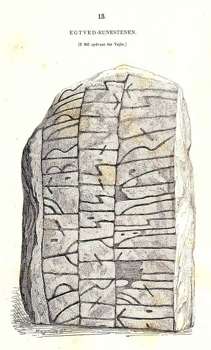
Eigener Scan aus dem in meinem Besitz befindlichen Buchexemplar.In seinem 1880 erschienenen Textband II macht er auf den S. 31 bis 34 Ausführungen zu diesem Runenstein.
P. G. Thorsens Nachlass (Bezeichnet als: P. G. Thorsens optegnelser, tegninger m.m. vedrørende runer og runemindesmærker - überführt aus der Kopenhagener Universitätsbibliothek 1929 - Gemäß Ministerialschreiben vom 04.03.1929; früher benannt als Additamenta 612 kvart - findet sich in der Königlichen Bibliothek unter NKS 3296 (in mehreren einzelnen Pappschachteln). In der Pappschachtel Nr. 4 sollte sich laut Lis Jacobsen/Erik Moltke - Danmarks Runeindskrifter - 1942 - Text - Nr. 37 - Sp. 62 ein Brief von Niels Jochum Termansen (*15.03.1824 - 09.05.1892, Politiker, Verfasser - link-LIVES)
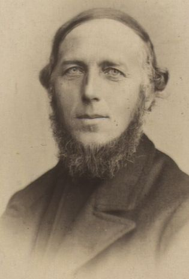
Bildquelle: Fotografie aus dem Jahr 1870 von Fotograf Jens Petersen (19.03.1829-1.2.1905) - Det Kgl. Biblioteks billedsamling - Lizenz: Public Domainvom 01.04.1863 mit einer Zeichnung befinden - Leider Fehlanzeige.
In der Schachtel Nr. 17 fand sich wie bei Lis Jacobsen/Erik Moltke - Danmarks Runeindskrifter - 1942 - Text - Nr. 37 - Sp. 62 vermerkt ein Brief von George Stephens (*13.12.1813 - 09.08.1895, englischer Archäologe und Philologe)
 Bildquelle:
Minder fra min Virksomhed paa Arkæologiens
Omraade fra 1845 til 1908 von
Magnus Petersen auf der
Seite 265 - Lizenz:
Public Domain
Bildquelle:
Minder fra min Virksomhed paa Arkæologiens
Omraade fra 1845 til 1908 von
Magnus Petersen auf der
Seite 265 - Lizenz:
Public Domain
vom 16.06.1872, den ich bei meinem Besuch in der Königlichen Bibliothek am 27.09.2022 fotografieren durfte. Eine Zeichnung von Prof. Magnus Petersen von 1875 fand ich darin leider auch nicht, obwohl sie da sein sollte.


In der Zeitschrift "Antiqvarisk tidskrift för Sverige, Band X, 1887-91" findet sich in dem Aufsatz von Erik Brate (*13.06.1856 - 11.04.1924, schwedischer Linguist und Runologe)
 Bildquelle:
Wikipedia
- Lizenz:
Public Domain
Bildquelle:
Wikipedia
- Lizenz:
Public Domain
mit dem Titel "Runverser" auf der S. 70 ein kurzer Beitrag zu dem Wort "isuku" in der Inschrift von Egtved. Es wird stattdessen die Lesung "suiku" vorgeschlagen. Brate setzt sich dort ab der S. 66 Nr. 19 mit und Forschungen von Sophus Bugge (*05.01.1833 - 08.07.1907, norwegischer Philologe / Runologe)
 Bildquelle:
Wikipedia
- Lizenz:
Public Domain
Bildquelle:
Wikipedia
- Lizenz:
Public Domain
und mit der uppländischen Inschrift von Torsätra (Nr. 614 / S. 21 in der pdf Datei - Infos auch hier - oder U614) auseinander.
Prof. Ludv. F. A. Wimmer (*07.02.1839 - 29.04.1920, Philologe und Runenforscher - link-LIVES - Politiets registerblade - Bestattungsprotokoll)
 Bildquelle:
Fotografie zw. 1877-1900 von Fotograf Hansen & Weller
-
Det Kgl. Biblioteks billedsamling - Lizenz:
Public Domain
Bildquelle:
Fotografie zw. 1877-1900 von Fotograf Hansen & Weller
-
Det Kgl. Biblioteks billedsamling - Lizenz:
Public Domain
hat seine Forschungen zu diesem Runenstein in seinem großformatigen Werk De danske runemindesmærker undersøgte og tolkede af Ludv. F. A. Wimmer, Band I.2 - De historiske runemindesmarker, 1895 - Nr. 8 - S. 59 bis 63 veröffentlicht.
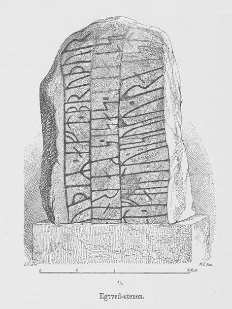
Über die tatsächlich erkennbaren Runen unternahm er darin diesen Versuch die Inschrift so zu vervollständigen, wie sie seiner Auffassung nach ursprünglich ausgesehen haben könnte:
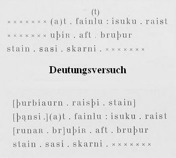
Er hält aber auch fest, dass die Inschrift verschiedene Schwierigkeiten aufweist, die sich wohl nicht auflösen lassen, sofern nicht das fehlende Stück des Steins gefunden wird.
Er hat den Runenstein persönlich vor Ort am 05./6. Mai 1875 untersucht, als er auf dem Weg von Kopenhagen nach Frederikshåb war - in Begleitung von Prof. Helvig Conrad Christian Engelhardt (*20. September 1825 - 11. November 1881 - dänischer Archäologe - link-LIVES - Bestattungsprotokoll)
 Bildquelle: Fotografie um 1875 von Fotograf
Lauritz Olsen (*24.03.1834 -
25.05.1899)
-
Det Kgl. Biblioteks billedsamling - Lizenz:
Public Domain
Bildquelle: Fotografie um 1875 von Fotograf
Lauritz Olsen (*24.03.1834 -
25.05.1899)
-
Det Kgl. Biblioteks billedsamling - Lizenz:
Public Domain
und von Prof. Magnus Petersen - um den neu entdeckten Runenstein von Randbøl (St. Rygbjerg) zu begutachten. Danach war er nochmals am 17. Juli 1878 und erneut am 27.07.1892 vor Ort. Über seine Studien vor Ort hat er die u.a. Zeichnung von Magnus Petersen noch persönlich überarbeitet.
Ludv. F. A. Wimmer hat seine jahrelangen Aufzeichnungen der "Kgl. Bibliotek" in Kopenhagen überlassen. Ein Verzeichnis darüber wurde 1915 in Buchform herausgegeben - "Collectio runologica Wimmeriana: Fortegnelse over Ludv. F. A. Wimmers runologiske o. a. Samlinger i Det kgl. Bibliotek"
In seinen Unterlagen in der Königlichen Bibliothek befinden sich unter "III - Originaltegninger af de danske Runemindesmærker, udførte paa Undersøgelsesrejserne af Magn. Petersen og kontrollerede paa Stedet af Ludv. Wimmer, samt Prøvetryk af de paa Grundlag af de nævnte Tegninger, Aftryk o. s. v. til De danske Runemindesmærker" udførte Afbildninger med Wimmers Rettelser"


zu dem Runenstein von Egtved unter der Nr. 25 diese Zeichnung vom 17.07.1878, die ich bei meinem Besuch in der Bibliothek am 27.09.2022 fotografieren durfte.

Von Hugo Gering (* 21. September 1847 - 3. Februar 1925, deutscher germanistischer und skandinavistischer Mediävist)
 Bildquelle:
Wikipedia - Lizenz:
Public Domain
Bildquelle:
Wikipedia - Lizenz:
Public Domain
wurde in der Zeitschrift für deutsche Philologie, Ausgabe 1906, ein Aufsatz mit dem Titel "Neuere Schriften zur Runenkunde. III" auf den S. 124 - 143 veröffentlicht. Auf der S. 130 kommt er auf diesen Runenstein in Egtved zu sprechen.
"Die verstümmelt überlieferte inschrift des steines von Egtved (J nr. 8) ist mit Sicherheit nicht zu ergänzen; die von Wimmer ausdrücklich als versuch bezeichnete herstellung: [þurbiaurn raisþi stain þansi] (a)t Fainlu i Suku; raist [runaR br]uþiR aft bruþur; stain sasi skarni . . . halte ich nicht für glücklich, da weder der männliche eigenname Fainla (d. i. *Fenla? got. *Fanilꝺ?) sonst sich findet noch auch der Ortsname Suka (d. i. * Sokka?) in Dänemark sich nachweisen lässt...." und weiter:
"...Indem ich nämlich annehme, dass Bugge mit seiner Vermutung isuku als suiku zu lesen (Antiqv. tidskr. f. Sver. 10 - S. 70) das richtige getroffen hat, möchte ich die nachstehende ergänzung als eine immerhin mögliche in anspruch nehmen: [Tutki sati stain aft Ala ias fiantR] (a)t Faintu isuku (lies suiku); raist [runaR. br]uþiR aft bruþur; stain sasi skarni . . Ich bemerke dazu, dass auf dem steine ebenso gut faintu wie fainlu gelesen werden kann, da der kopf der vorletzten rune beschädigt ist und nehme an, dass das wort in phonet. transscription durch Fendo zu geben ist, das ich für den altdän. namen von Venedig halte (in westnordischen quellen heisst die stadt Fenedi oder mit überaus glücklicher volksetymologischer umdeutung Feney): ist es eine zu kühne hypothese, dass der mann, zu dessen gedächtnis der bruder den stein errichtete, auf einer wikingerfahrt ins Adriatische meer verschlagen wurde und in der nähe von Venedig durch verrat seinen untergang fand ? Die gegner des getöteten können natürlich deutlicher bezeichnet gewesen sein, und die beiden männl. eigennamen sind nur aufs geratewol ihrer kürze wegen gewählt, um mit dem knapp bemessenen raume einer zeile von ca. 24 zeichen auszukommen. Völlig rätselhaft ist auch mir das letzte wort der inschrift: dass an den dat. des bekannten, allen nordischen sprachen gemeinsamen neutrums nicht gedacht werden kann, leuchtet ein, was aber hier sich versteckt, wird vermutlich immer verborgen bleiben, falls nicht die ergänzenden bruchstücke einmal in der kirchhofsmauer von Egtved noch aufgefunden werden sollten."
Durch Marius Kristensen (*27.04.1869 - 02.11.1941, Dr. phil. Hochschullehrer, Dänischer Sprachforscher - link-LIVES - Begravelsesprotokoller)
 Bildquelle:
Denstoredanske.lex - Lizenz:
Public Domain
Bildquelle:
Denstoredanske.lex - Lizenz:
Public Domain
wurde in dem Werk "Nordisk tidsskrift for filologi - Jahrgang 1906-07" ein Artikel mit dem Titel "Fra de danske runesten" ab der S. 148 veröffentlicht. Auf der Seite 155 geht er auf diesen Runenstein und seine unsichere Inschrift ein. Er versucht dabei über das Wort "fainlu" weitere Teile der Inschrift zu entschlüsseln - letzlich erfolglos.
Dieses Foto des Runensteins stammt von dem Uhrmacher und Amateurfotograf Thomas Ludvig Thomsen (*21.03.1867 - 28.02.1935 - link-LIVES) aus Kolding
 Bildquelle:
Kolding Stadsarkiv
- Lizenz:
Public Domain
Bildquelle:
Kolding Stadsarkiv
- Lizenz:
Public Domain
und wurde wohl um 1925 aufgenommen - und wird heutzutage in dem "Kolding Stadsarkiv" aufbewahrt.
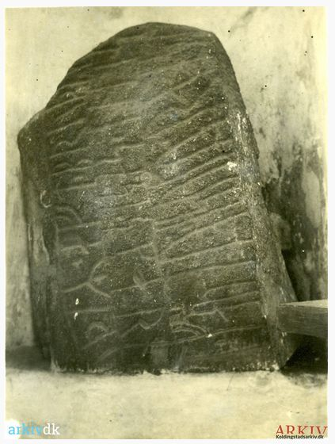
Quelle: arkiv.dk - Download 27.03.2022 - unveränderte Wiedergabe
Dieses Foto hat Erik Moltke (*04.04.1901 - 19.10.1984, Runologe, Historiker)
 Bildquelle: Scan von Buchumschlag "Runerne i Danmark og ders
oprindelse" - Erik Moltke - 1976 -
Lizenz:
CC-BY-SA
Bildquelle: Scan von Buchumschlag "Runerne i Danmark og ders
oprindelse" - Erik Moltke - 1976 -
Lizenz:
CC-BY-SA
am 23.05.1930 gemacht.
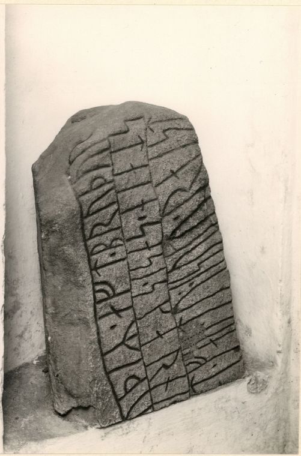
Quelle: Digitale Sammlung Nationalmuseum Kopenhagen - Lizenz: CC-BY-SA
Durch Lis Jacobsen (*29.01.1882 - 18.06.1961, dänische Runologin und Archäologin -link-LIVES - Taufe - Melderegister - Hochzeit)
Bildquelle:
Wikipedia - Lizenz:
Public Domain
wurde der Aufsatz mit dem Titel "Syv runestenstolkninger" in den "Aarbøger for Nordisk Oldkyndighed og Historie - 1935" auf den S. 167-224 veröffentlicht. Auf den S. 185-94 setzt sich sie sich mit der Historie und einer sehr mutigen Neudeutung der Inschrift auseinander. Im Ergebnis ihrer Überlegungen folgert sie, dass die Inschrift so gelesen werden kann:
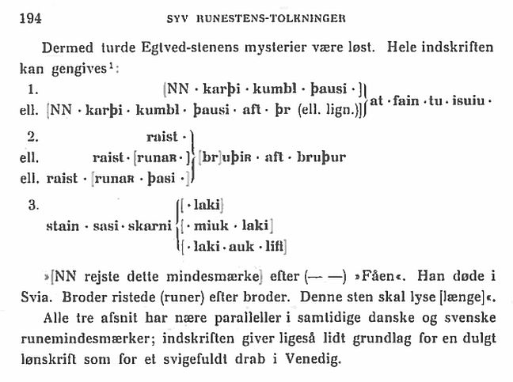
Übersetzt: "Damit wären die Egtved Rätsel gelöst: Die gesamte Inschrift kann reproduziert werden: ...
Wiedergabe der Inschrift
...alle drei Abschnitte weisen enge Parallelen in zeitgenössischen dänischen und schwedischen Runendenkmälern auf; Die Inschrift liefert ebenso wenig Anhaltspunkte für eine verborgene Abrechnung wie für einen betrügerischen Mord in Venedig.
In dem später erschienenen großen Standardwerk "Lis Jacobsen/Erik Moltke - Danmarks Runeindskrifter - 1942 - Text" hat man aber diesen Vorschlag nicht umgesetzt.
Im Vorfeld zu dem 2016 erschienenen Buch von Lisbeth M. Imer (*1973, Runologin am Nationalmuseum Kopenhagen) "Danmarks Runesten - en fortælling" reiste sie mit dem Fotografen Roberto Fortuna zur Bestandsaufnahme durch die Lande. Dieser hat die Runensteine abends bei Dunkelheit mit Schräglicht aufgenommen und darüber wirklich herausragende Fotos erzielt. Diese Aufnahme entstand am 08.11.2011.
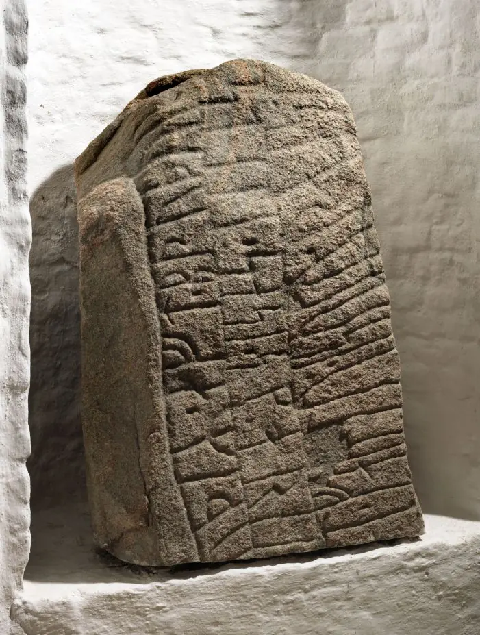
Quelle: Digitale Sammlung Nationalmuseum Kopenhagen - Lizenz: CC-BY-SA
Die Informationen zu diesem Runenstein aus der dänischen Runendatenbank finden sich hier.
Der entsprechende Eintrag in "Fund og Fortidsminder" ist hier verlinkt. Dort ist inzwischen auch ein Zustandsbericht des Steinkonservators Leif Vognsen aus dem Jahr 2018 eingebettet.
Über diesen Link finden sich zu dem Runenstein Informationen des Forschungsprojektes "Runes" der Akademie der Wissenschaften zu Göttingen.
Heutzutage kann man auch via Google StreetView von zu Hause aus seelenruhig durch die Kirche von Egtved spazieren und sich alles in Ruhe anschauen. Eine tolle Sache! Den Kleiderständer hätte man aber besser vorher - vor dem Runenstein - wegstellen können! :-(
Über die Webseite der Egtved Kirche finden sich außerdem zu allen Bauabschnitten / zum Interieur umfassende Erklärungen in dänischer Sprache und am Ende der Seite noch eine durchlaufende Bilderfolge.
Auf den Webseiten des Nationalmuseum in Kopenhagen - Danmarks Kirker - kann man eine in dänischer Sprache gehaltene 98-seitige, bebilderte Abhandlung als pdf-Datei zur Baugeschichte/Innenausstattung der Kirche von Egtved aus dem Jahr 2023 abrufen.